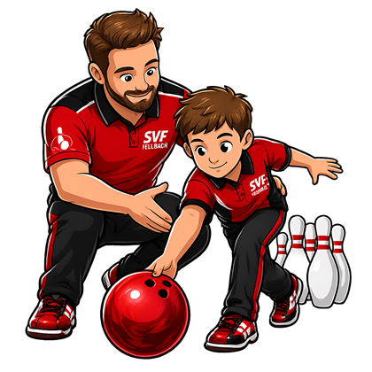

Über uns
Die Bowling-Abteilung des SV Fellbach bietet Bowling für alle Altersklassen – vom Hobby- bis zum Ligaspieler. Bei uns spielen mehrere Herren-, eine Damen- und eine Jugendmannschaft im Ligabetrieb, dazu gibt es Monatspokale, Turniere und gemeinsame Vereinsabende.

Training & Probetraining
Du willst Bowling ausprobieren? Komm einfach unverbindlich zu einem kostenlosen Probetraining vorbei – Leihschuhe und Bälle gibt es vor Ort. Anfänger:innen und erfahrene Spieler:innen sind gleichermaßen willkommen.
- Donnerstags 19:00–21:00 Uhr – Jugend & Erwachsene
- Samstags 10:00–12:00 Uhr – Jugend
- Dream Bowl Fellbach
Ansprechpartner
Abteilungsleitung
Christiane Discher
Rieslingstr. 5
71364 Winnenden
Tel.: 0176 – 20300392
abteilungsleiter@svf-bowling.de
Jugendleitung
Kay Kiesshauer
Gartenstr. 17/1
71384 Beutelsbach
Tel.: 0176 – 44912914
jugendleiter@svf-bowling.de
Schon gewusst?
- 5 Mannschaften im Ligabetrieb
- Eigener Monatspokal & Vereinsmeisterschaft
- Aktive Jugend- und Nachwuchsarbeit
- Teilnahme an württembergischen Meisterschaften
Anfahrt
Wir spielen und trainieren im Dream Bowl Fellbach. Parkplätze sind direkt vor Ort vorhanden.